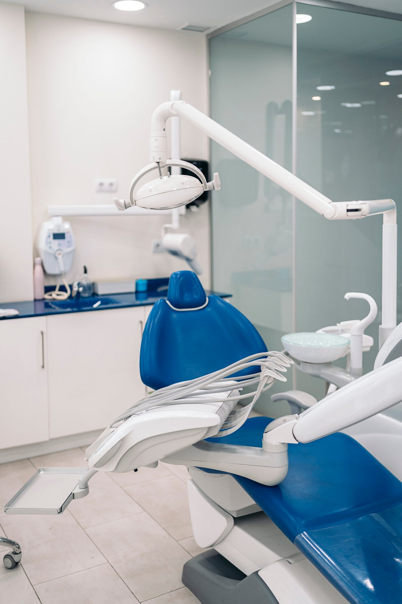
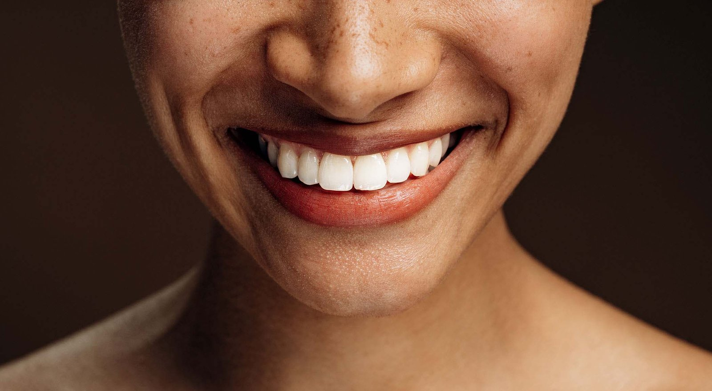
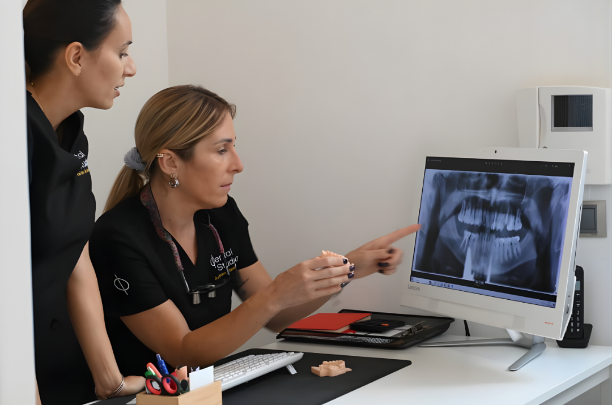
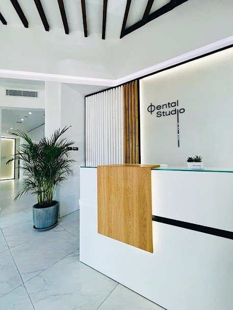

Cercanía y honestidad
Información clara, presupuestos transparentes y una relación basada en la confianza.
Dental Studio Tenerife
Odontología cercana, honesta y de alta calidad. Escuchamos, planificamos y te acompañamos en cada paso.
Tu sonrisa es nuestra prioridad
Cada tratamiento empieza escuchándote. Diseñamos soluciones seguras, cómodas y personalizadas para que vivas la odontología con confianza.
Nuestros valores
Información clara, presupuestos transparentes y una relación basada en la confianza.
Dedicamos el tiempo necesario a escuchar, explicar y resolver todas tus dudas.
Profesionales coordinados en todas las áreas de la odontología.
Diagnóstico y planificación digital para tratamientos más precisos.
Procedimientos modernos orientados a la seguridad y la prevención.
Tratamientos precisos, seguros y cómodos, adaptados a cada persona.

Nuestro proyecto, tu sonrisa
Dental Studio nace para ofrecer una atención odontológica cercana, honesta y de alta calidad. Unimos experiencia, formación continua y tecnología para crear planes de tratamiento claros y personalizados.
Tratamientos destacados
Prevención, revisiones, limpieza dental y mantenimiento de tu salud bucodental.
DescubrirCarillas, coronas y blanqueamiento con resultados naturales y armónicos.
Descubrir
Prótesis y rehabilitación integral para recuperar función, estética y comodidad.
DescubrirImplantes, carga inmediata y cirugía guiada 3D para resultados precisos.
DescubrirNuestro equipo
Trabajamos de forma coordinada para ofrecer diagnósticos precisos, tratamientos seguros y una experiencia tranquila. La excelencia técnica importa, pero también cómo te hacemos sentir.


Testimonios
Experiencias reales que reflejan nuestro compromiso diario con una atención cercana, honesta y de calidad.
“Trato inmejorable y atención al detalle. Un servicio que supera expectativas.”
“Me ayudaron a decidir con claridad. Cercanía, profesionalidad y mucha confianza.”
“Very kind, professional and fast. A beautiful studio and a great experience.”
Resultados naturales
Combinamos planificación, precisión y estética para lograr cambios que se sientan tuyos.
Desliza para comparar el antes y el después.
Tu opinión nos importa
Escanea el código o accede directamente para compartir tu experiencia con Dental Studio.
Preguntas frecuentes
Todo empieza con información clara. Estas son algunas de las preguntas más habituales.
Puedes llamar, escribirnos por WhatsApp o completar el formulario de contacto. Te responderemos para confirmar el día y la hora.
Escucharemos tus necesidades, realizaremos una valoración completa y te explicaremos las opciones de tratamiento con claridad.
Sí. Cada plan se adapta a tu salud, objetivos, ritmo y presupuesto.
Utilizamos diagnóstico y planificación digital, radiodiagnóstico 3D y protocolos actualizados.
Sí. Contamos con atención para todas las etapas de la vida, incluida odontopediatría.
Tu cita, sin complicaciones
Cuéntanos qué necesitas y nuestro equipo te acompañará desde la primera visita.